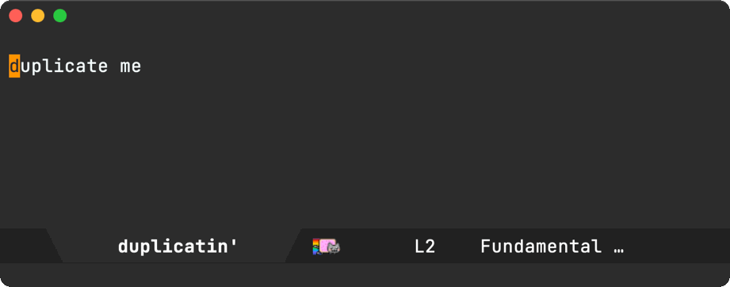
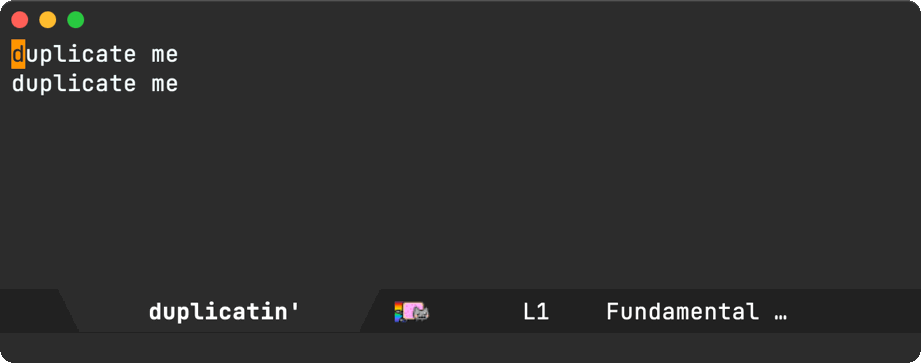
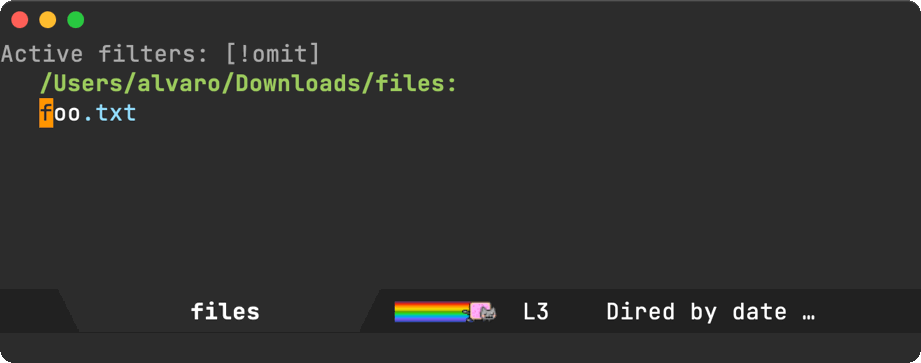
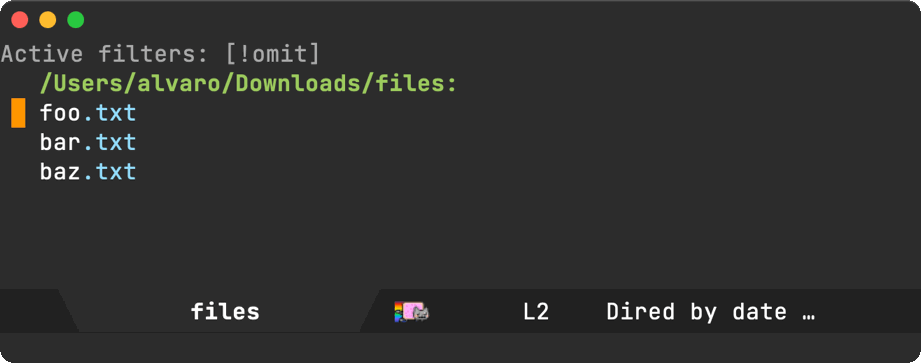
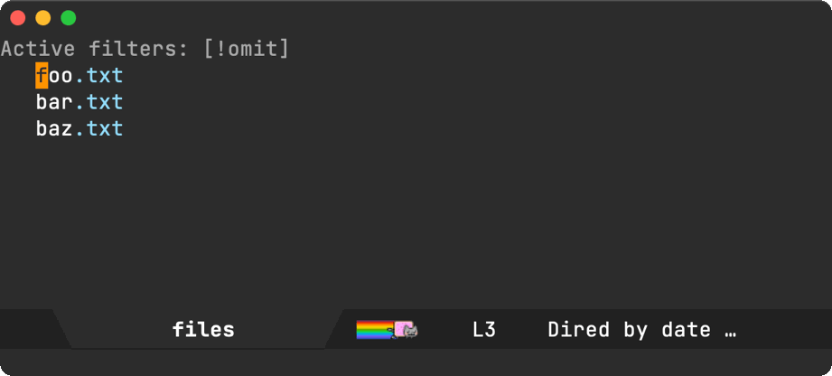
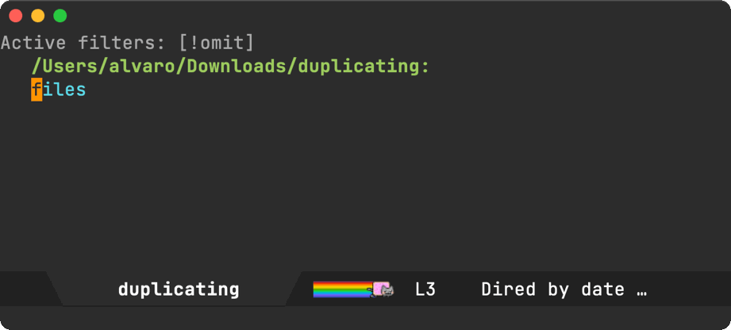
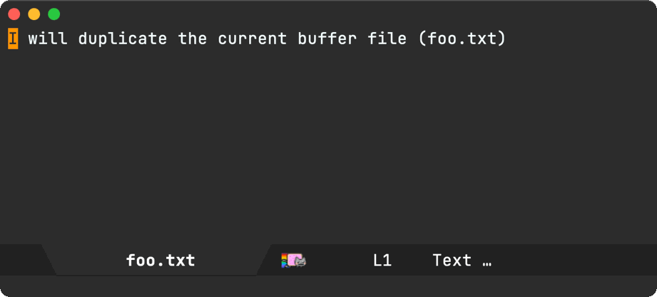

Álvaro Ramírez
Duplicate this!
James Dyer has a nice post sharing his frequent dired need to duplicate files. He offers a solution using a custom interactive command. His use-case resonated with me.
Similarly, James' recommendation to bind his file-duplicating command to C-c d [1] sent a signal to my brain triggering Bozhidar Batsov's crux-duplicate-current-line-or-region.
crux-duplicate-current-line-or-region is part of a "collection of Ridiculously useful extensions for Emacs" (yeah that's crux). The command itself does what it says on the tin.
Let's duplicate the current line.

Now let's duplicate the current region.

Since I already have a well-internalized key-binding duplicating lines/regions in text buffers, I could extend a similar behaviour to dired files with almost zero adoption effort.
In case you haven't noticed, I've made it a part-time job to make command line utilities easily accessible from Emacs (1 2 3 4 5 6 7 8 9 10 11 12 13 14 15 16 17 18 19 20 21) via dwim-shell-command. Partly because it's fairly quick and partly 'cause it's fun.
Jame's post gave me yet another opportunity to exercise my errrm part-time job. This time, duplicating files. All I need is the cp utility and a template:
cp -R '<<f>>' '<<f(u)>>'
I seldom type these template's myself when I want to execute a command (via M-x dwim-shell-command). I typically wrap these templates in interactive commands, making them easily accessible via M-x and your favorite completion framework. I happen to use ivy.
(require 'dwim-shell-command) (defun dwim-shell-commands-duplicate () "Duplicate file(s)." (interactive) (dwim-shell-command-on-marked-files "Duplicate file(s)." "cp -R '<<f>>' '<<f(u)>>'" :utils "cp"))
There's nothing much to the command. Most logic is handled by the template, replacing <<f>> with the current file and <<f(u)>> with a uniquified version of it. Having said this, there's a bunch of free DWIM love that kicks in, courtesy of the dwim-shell-command package by yours truly. Let's give our new dwim-shell-commands-duplicate command a spin.
Like crux-duplicate-current-line-or-region duplicates the current line, our new command duplicates the current dired file.

Got multiple files to duplicate? Like crux-duplicate-current-line-or-region, we can use the region for a similar purpose.

While we have been using the region to duplicate adjacent files, we can also mark specific files.

Our cp -R '<<f>>' '<<f(u)>>' template uses the -R (recursive) flag, so we get another freebie. In addition to files, we can also duplicate directories.

Lastly, because we're on a DWIM train, if your current buffer happens to be visiting a file, you can M-x dwim-shell-commands-duplicate the current file to duplicate it. You're automatically dropped to a dired buffer, with point on the new file (à la dired-jump).

While duplicating files using a template was a mere cp -R '<<f>>' '<<f(u)>>' away, we get a bunch of free DWIM magic applied to a handful of use-cases and contexts. What made the file-duplicating use-case extra special is that it maps almost exactly to an equivalent text command. Keep the same key bindings and we almost get a "free feature".
(use-package crux :ensure t :commands crux-open-with :bind (("C-c d" . crux-duplicate-current-line-or-region))) (use-package dwim-shell-command :ensure t :bind (:map dired-mode-map ("C-c d" . dwim-shell-commands-duplicate)) :config ;; Loads all my own dwim shell commands ;; (including `dwim-shell-commands-duplicate') (require 'dwim-shell-commands))
You can find my ever-growing list of similar commands over at dwim-shell-commands.el (the optional part of the package). Got some nifty usages? Would love to check 'em out. Get in touch.
Like this or other content? ✨Sponsor✨ via GitHub Sponsors.
[1]: I actually use C-x C-d for crux-duplicate-current-line-or-region but same same…
Update
If you're keen on a regex-based approach, u/arthurno1 offers a great built-in alternative: dired-do-copy-regexp (bound to % C).